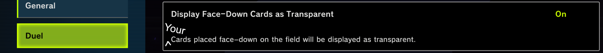
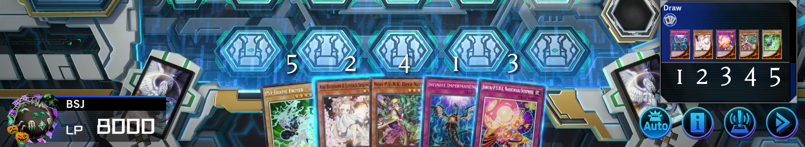
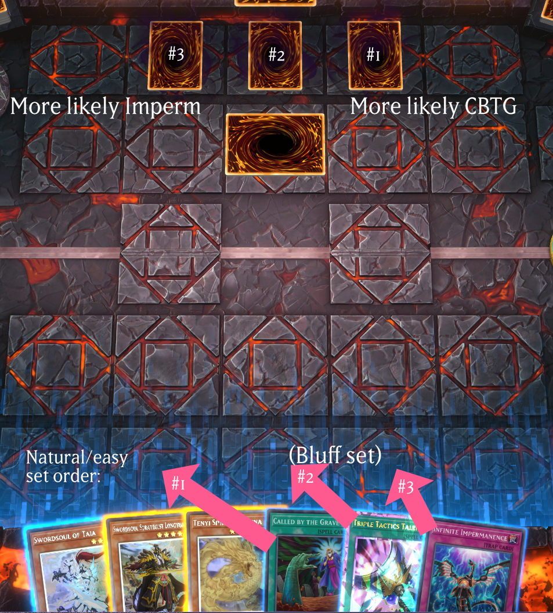
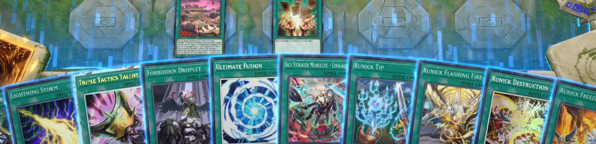
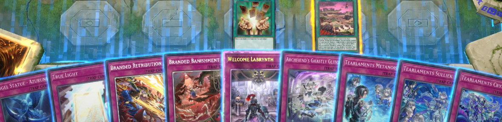

Reading Backrow in Master Duel
Introduction#

Your opponent, having finished their combo, sets three cards face-down - all unknowns. Their archetype doesn't have much for specific backrow, so these cards are likely to be some combination of Infinite Impermanence/Called by the Grave/Crossout Designator/bluffs. The days of Mystical Space Typhoon are far gone, but as you play into their board you may get opportunities to remove some of their sets. But which of the three should you target? Is the best card in the middle?
I'll go over some general strategies and considerations, and then introduce a strategy that really shouldn't be possible, and that I haven't seen much awareness of.
Basic reads#
Suppose your opponent ends with one unknown set. There's no conclusive way to determine what it is, but a few factors can modify the probabilities. Some common examples:
- Imperm is sort-of "optimal" to put in the pendulum zones - opponents on pendulum strategies would be forced to play into the column effect.
- The center column is also a decent option for Imperm - an inattentive opponent is more likely to activate a Spell in the middle.
- Those locations do send a stronger "this set may be Imperm" signal - so you could place Imperm in zone 2/4 if you'd rather your opponent read it as Called by the Grave.
- If, while your opponent comboed, you saw delays before their effects resolved, they likely have Maxx "C"/Ash/Crossout in hand. As you begin to play, if they don't drop any handtraps (but had delays during their combo), a single set is more likely to be Crossout. Of course, other cards like Tear Kash, toggle settings, and lag can complicate this sort of read - properly covering toggle reads would need much more space. This recent video has some excellent information and examples. Always be careful.
- In Stun, Dinomorphia, and similar decks, Iron Thunder should be set away from their Barrier Statue/Rexterm column.
- If set cards are already on the field, placing into the same column hints at an Imperm (although this depends - setting an Imperm into an opponent's Imperm can be bad).
Metagame knowledge is obviously critical - knowing what cards which decks are likely to play is crucial to narrow down the possibilities. Setting aside delay-based reads, these considerations apply to Yugioh wherever it's played. However, Master Duel has one more unique feature that can also have an influence.
Hand sorting#
PSY-Framegear Driver doesn't appear first in your hand just because he likes you so much. It's also because Master Duel always presents your hand in a sorted manner, and normal monsters happen to have priority. You can check the duel log to see the actual draw order for your opening hand:

Additional cards you draw or search will be sorted in through the same method - this is most obvious if your opponent is taking the Maxx "C" challenge.
This usually doesn't matter - when a card is played, it doesn't appear to come from any particular slot in your opponent's hand. If your opponent tribute summons Driver, it doesn't look like it was their leftmost card, for example. Things get more dangerous when it comes to setting backrow. The easiest way to set a few spells/traps is to take your leftmost card, put it in the leftmost zone you wish to use, and proceed to the right. In that case, your opponent can use their knowledge of Master Duel's sorting to estimate where specific named cards would be.

For your reference, and to help understand how this will specifically play out, let's go through most common Spells/Traps and their hand placement.
Spells#

From some solo mode testing, here's an (incomplete) list of somewhat commonly played Spells/Traps and the order they appear in (left-to-right). Note that it is not alphabetical, by card subtype, or by passcode. If anything, release date looks plausible. More interesting cards bolded, and some archetype-specific cards are included.
- Dark Hole
- Raigeki
- Harpie's Feather Duster
- Monster Reborn
- Reinforcement of the Army (standard art)
- Book of Moon
- Gold Sarcophagus
- Super Polymerization
- Emergency Teleport
- Book of Eclipse
- Forbidden Chalice
- Into the Void
- Pot of Duality
- Twin Twisters
- Cosmic Cyclone
- Pot of Desires
- Foolish Burial Goods
- Called by the Grave
- Sky Striker Mecha - Hornet Drones
- Sky Striker Mecha - Widow Anchor
- Sky Striker Mecha - Eagler Booster
- Sky Striker Mecha - Shark Cannon
- Pot of Extravagance
- Crossout Designator
- Lightning Storm
- Triple Tactics Talent
- Forbidden Droplet
- Ultimate Fusion
- Sky Striker Mobilize - Linkage!
- Runick Tip
- Runick Flashing Fire
- Runick Destruction
- Runick Freezing Curses
- Runick Slumber
- Runick Smiting Storm
- Runick Golden Droplet
- Runick Dispelling
- Scareclaw Straddle
- Kashtiratheosis
- Vanquish Soul Dust Devil
- WANTED: Seeker of Sinful Spoils
- Mementotlan Bone Party
- Mementotlan Fusion
- Reinforcement of the Army (Sky Striker alt art)
- Tales of the White Forest
- Vesper Girsu
- Scourge of the White Forest
- Final Bringer of the End Times
- Sinful Spoils of the White Forest
Traps#

- Solemn Judgment
- Rivalry of Warlords
- Skill Drain
- Macro Cosmos
- Eradicator Epidemic Virus
- Gozen Match
- Different Dimension Ground
- Solemn Strike
- Dimensional Barrier
- Heavy Storm Duster
- Evenly Matched
- There Can Be Only One
- Infinite Impermanence
- Trap Trick
- Eldlixir of Scarlet Sanguine
- Huaquero of the Golden Land
- Conquistador of the Golden Land
- Golden Land Forever!
- Dogmatika Punishment
- Ice Dragon's Prison
- Angel Statue - Azurune
- True Light
- Branded Retribution
- Branded Banishment
- Welcome Labrynth
- Archfiend's Ghastly Glitch
- Tearlaments Metanoise
- Tearlaments Sulliek
- Tearlaments Cryme
- Branded Beast
- Kashtira Preparations
- Destructive Daruma Karma Cannon
- Kashtira Big Bang
- Big Welcome Labrynth
- Weighbridge
- Brightest, Blazing, Branded King
- Sinful Spoils of Betrayal - Silvera
- Vanquish Soul Snow Devil
- Radiance of the Voiceless Voice
- Iron Thunder
- Sinful Spoils of Slumber - Morrian
- Simultaneous Equation Cannons
- Woes of the White Forest
- Azamina Aphes
Countermeasures#
There's a fairly annoying, if effective, way to make you safe from this. After deciding which cards you wish to set, just randomize the cards and/or zones you set first. Maybe roll a d6 to pick cards, setting them in zones left-to-right.
Ideally, Master Duel could implement a button to shuffle your hand. Then, you could just hit that button and lazily set the cards as they appear in your newly reordered hand. Some unofficial simulators like EDOPro have this feature already.
If you believe your opponent is assuming your own sets are placed based on card ordering, you can of course use that to your advantage by setting the cards in some other order (putting your low-value backrow/bluffs where they might expect your high-value sets to be).
Conclusion#
If you believe your opponent is being careless with their set order, some simple takeaways:
- The first sets (if done left-to-right) are more likely to be Spells, and the last sets are more likely to be Traps
- Super Polymerization, being one of the oldest dangerous staples and a Spell, is relatively likely to be the first set
- An archetype released after ~2018 is more likely to set their in-archetype trap after Imperm
- Simultaneous Equation Cannons is likely set towards the end
Of course, if your opponent lazily sets their cards right-to-left, the field position doesn't change but the order flips.
In a more competitive setting, I wouldn't recommend relying on these reads. Skilled opponents are more likely to at least somewhat randomize their set order/placement, and could even use this to mislead you.
Other notes#
The card lists were derived from in-game tests. If you see an error (cards appearing in your hand in some other sequence), please let me know so I can correct it.